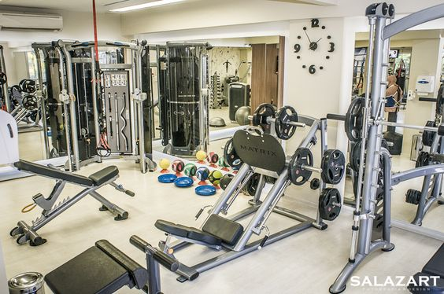

Top of the line equipment

Klub 20 is proud to hold top of the line Technogym equipment. We make sure that we have all the equipment necessary for a fantastic workout no matter what your style may be. We have a variety of dumbbells that go up to 110lbs, 4 squat racks and 2 smith machines for our heavy lifters. For our cardio lovers we are equipped with a multitude of treadmills, ellipticals, stairmasters and rowing machines. All of our electronic machines include a touch screen where you can watch videos, listen to music, or search the internet. We also have the option to travel virtually so if you feel like running on the boardwalk in sunny San Francisco, or through the woods, you can!
 pJoin the party! Zumba is a dance based workout. The styles of dance include hip hop, samba, mambo , salsa and more. If you love to swing your hips and groove to the beat – Zumba is a must try. The instructors create a lively environment with great music and great peopleallowing you to burn calories without even realizing you are working out! This high calorie burning workout will help shed excess body fat and tone and tighten all the right places! The choreographed dance moves will help get your heart pumping and increase your endurance. You are guaranteed to leave a zumba class in a better mood and with increased confidence!
pJoin the party! Zumba is a dance based workout. The styles of dance include hip hop, samba, mambo , salsa and more. If you love to swing your hips and groove to the beat – Zumba is a must try. The instructors create a lively environment with great music and great peopleallowing you to burn calories without even realizing you are working out! This high calorie burning workout will help shed excess body fat and tone and tighten all the right places! The choreographed dance moves will help get your heart pumping and increase your endurance. You are guaranteed to leave a zumba class in a better mood and with increased confidence!